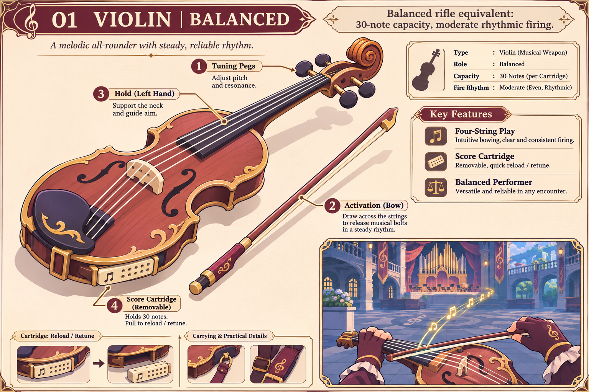
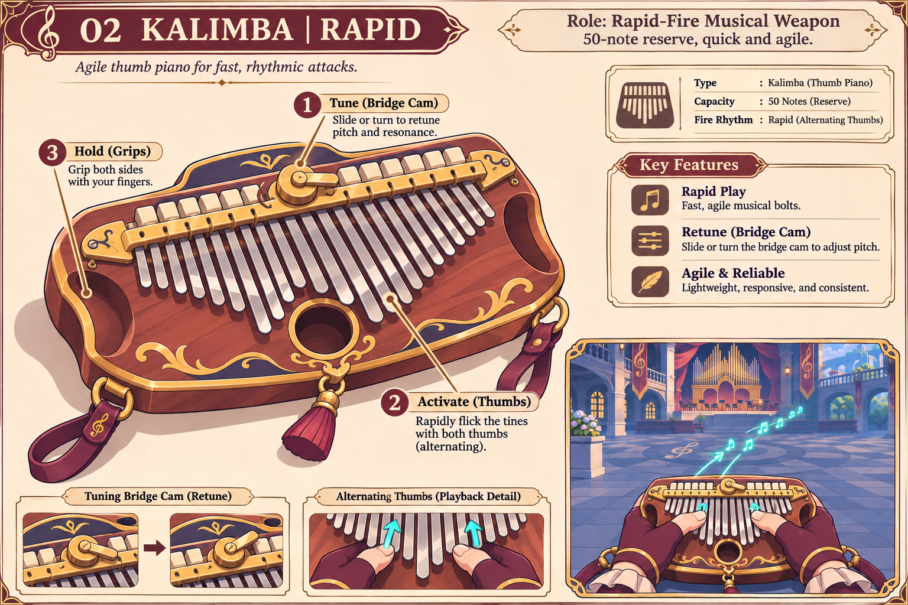
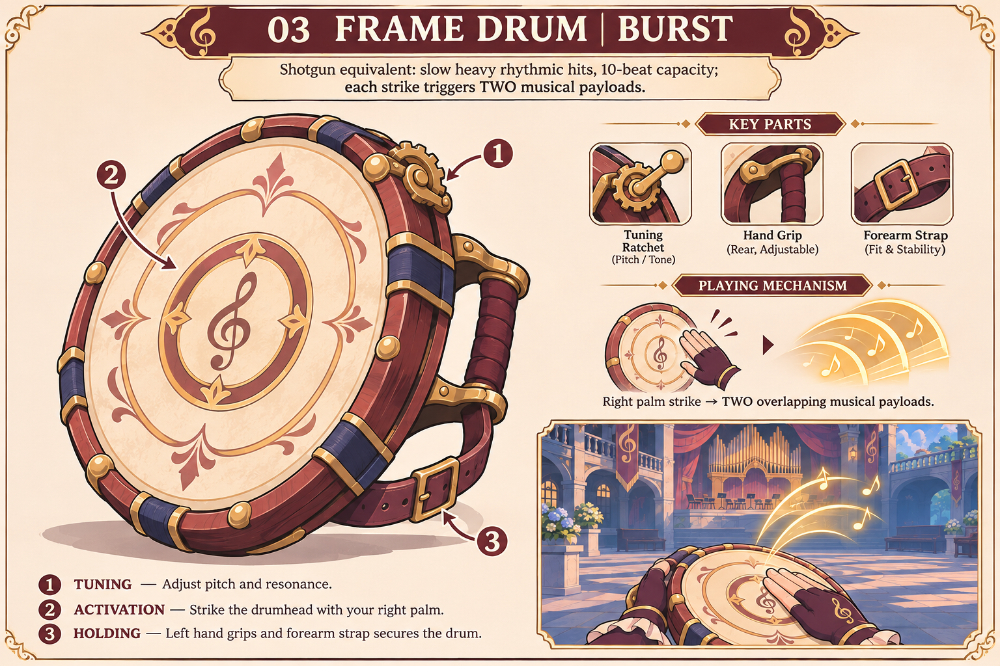
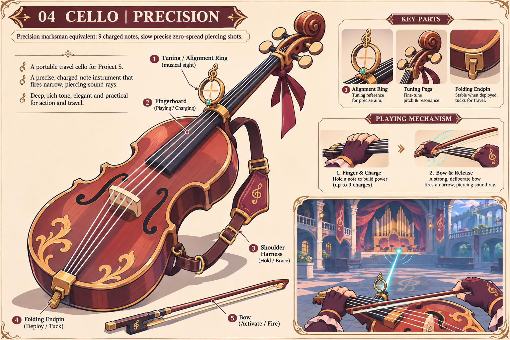
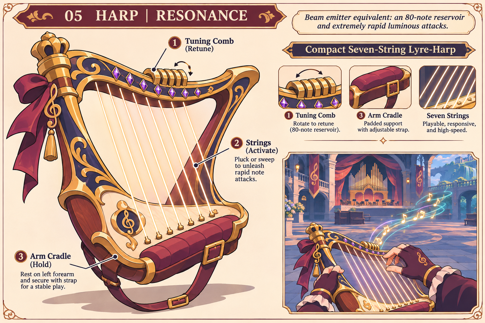
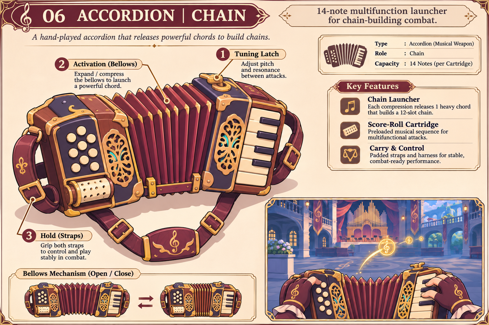

02 复古动漫赛璐璐 / APIMart · gpt-image-2 / 每张 1536×1024第 2 版：02 改为拇指琴，06 改为手风琴。点击图片查看原图。图中调律、持握及攻击表现为设计提案；玩法以现有配置为准。

均衡连射 · rifle

双拇指拨片 · 高速连射 · smg

双声部近距爆发 · shotgun

远距精准穿透 · sniper

高容量密集共鸣 · beam

双手拉合 · 重音抛射与连锁 · launcher